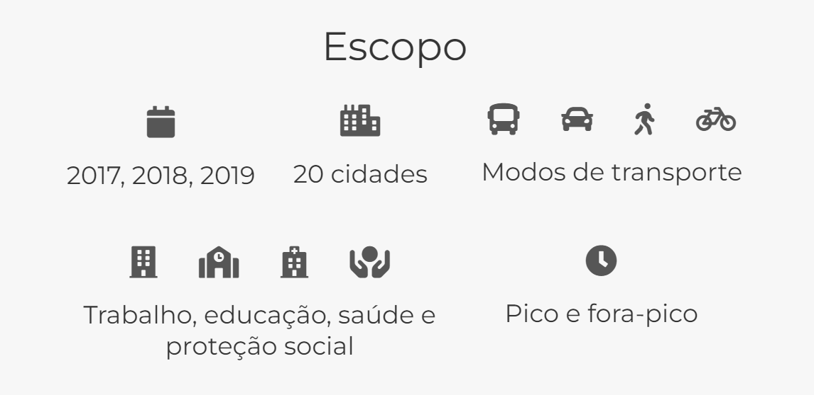
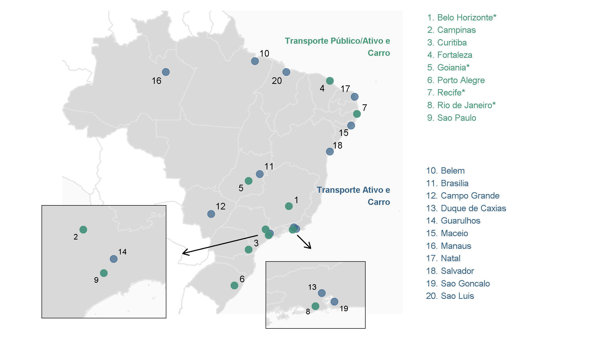

SEÇÃO 5: Dados do Projeto Acesso a Oportunidades
Os objetivos desta seção são: i) apresentar os dados de acessibilidade, de uso do solo e socioeconômicos disponibilizados pelo projeto Acesso a Oportunidades (AOP); e ii) ensinar a baixá-los e utilizá-los com o pacote de R {aopdata}.
Nos capítulos anteriores, aprendemos sobre o conceito de acessibilidade, como traduzi-lo em medidas quantitativas e como calcular essas medidas usando R. No entanto, frequentemente nos deparamos com situações em que não podemos estimar os níveis de acessibilidade por conta própria, por não termos o tempo ou os dados necessários para isso, ou em que não precisamos fazer esse cálculo, porque tais estimativas já foram realizadas por outras pessoas. Ao longo dos próximos capítulos, apresentaremos a base de dados com estimativas de acessibilidade criada e disponibilizada no âmbito do projeto Acesso a Oportunidades (AOP).
O AOP é um projeto de pesquisa liderado pelo Instituto de Pesquisa Econômica Aplicada (Ipea) com o objetivo de compreender as condições de transporte e as desigualdades de acesso a oportunidades nas cidades brasileiras. Todos os resultados dos dados produzidos pela equipe do AOP são disponibilizados publicamente. A base disponibilizada contém não apenas estimativas de acessibilidade urbana, mas também informações sobre distribuição e contagem populacional e de atividades econômicas e serviços públicos. Os dados estão agregados espacialmente em uma grade hexagonal que segue o sistema de gradeamento H3, desenvolvido pela Uber (Brodsky 2018). Cada célula espacial tem cerca de 0,11 km², área similar à coberta por um quarteirão, permitindo análises em alta resolução espacial. Como apresentado na Figura 1, as estimativas de acessibilidade estão disponíveis para os anos de 2017, 2018 e 2019 e para as vinte maiores cidades do Brasil, considerando diferentes modos de transporte (caminhada, bicicleta, transporte público e automóvel), horários do dia (pico e fora-pico), grupos populacionais (segundo níveis de renda, cor, sexo e idade) e tipos de atividade (empregos, escolas, serviços de saúde e centros de assistência social).
As metodologias utilizadas para gerar esses dados são apresentadas em detalhe em publicações separadas para os dados populacionais e de uso do solo (Pereira, Herszenhut, et al. 2022) e para os dados de acessibilidade (Pereira, Braga, et al. 2022).
Os níveis de acessibilidade por transporte público foram estimados apenas para as cidades que disponibilizaram ao projeto dados GTFS de qualidade considerada aceitável. São elas: Belo Horizonte, Campinas, Curitiba, Fortaleza, Goiânia1, Porto Alegre, Recife, Rio de Janeiro e São Paulo. Ainda assim, algumas dessas cidades disponibilizaram feeds apenas para determinados anos ou compartilharam arquivos considerados não representativos do sistema de transporte público operado na prática, resultando na exclusão das estimativas dessas cidades para alguns anos. A Figura 2 indica as cidades para as quais foram calculados os níveis de acessibilidade por modo de transporte.

A seguir, duas tabelas resumem os dados disponibilizados pelo projeto. A Tabela 1 apresenta os dados de acessibilidade urbana:
| Indicador (código) | Descrição | Tipo de oportunidades | Limites de tempo de viagem |
|---|---|---|---|
| Tempo mínimo de viagem (TMI) | Tempo até a oportunidade mais próxima | Saúde, educação, Centros de Referência de Assistência Social (CRAS) | A pé (60 min.); bicicleta, transporte público e carro (120 min.) |
| Medida cumulativa ativa (CMA) | Quantidade de oportunidades acessíveis em um determinado limite de tempo | Trabalho, saúde, educação, CRAS | A pé e bicicleta (15, 30, 45 e 60 min.); transporte público e carro (15, 30, 60, 90 e 120 min.) |
| Medida cumulativa passiva (CMP) | Quantidade de pessoas que acessam a localidade em um determinado limite de tempo | - | A pé e bicicleta (15, 30, 45 e 60 min.); transporte público e carro (15, 30, 60, 90 e 120 min.) |
Já a Tabela 2 apresenta os dados de características socioeconômicas da população e de distribuição espacial de oportunidades:
| Dado | Informações | Anos | Fonte |
|---|---|---|---|
| Características sociodemográficas da população | Quantidade de pessoas segundo sexo, faixa de idade e cor/raça; média da renda domiciliar per capita | 2010 | Censo Demográfico, Instituto Brasileiro de Geografia e Estatística (IBGE) |
| Estabelecimentos de educação | Quantidade de creches e escolas públicas segundo nível de ensino (infantil, fundamental e médio) | 2017, 2018, 2019 | Censo Escolar, Inep |
| Estabelecimentos de saúde | Quantidade de estabelecimentos de saúde que atendem pelo SUS segundo nível de atenção (baixa, média e alta complexidade) | 2017, 2018, 2019 | Cadastro Nacional de Estabelecimentos de Saúde (CNES), Ministério da Saúde |
| Atividade econômica | Quantidade de empregos formais conforme o nível de instrução dos trabalhadores (baixa, média e alta escolaridade) | 2017, 2018, 2019 | Relação Anual de Informações Sociais (RAIS), Ministério da Economia |
| Estabelecimentos de assistência social | Quantidade de CRAS | 2017, 2018, 2019 | Censo SUAS, Ministério da Cidadania |
Todas as bases de dados criadas pelo AOP estão disponíveis para download no site do projeto ou pelo pacote de R {aopdata}. O dicionário de dados pode ser acessado neste link ou, em uma sessão de R, com o comando aopdata::aopdata_dictionary(lang = "pt"). Os capítulos desta seção apresentam diversos exemplos de como baixar e visualizar esses dados em R.
O GTFS de Goiânia descreve a rede de transporte público não apenas do município, mas de toda a sua região metropolitana.↩︎